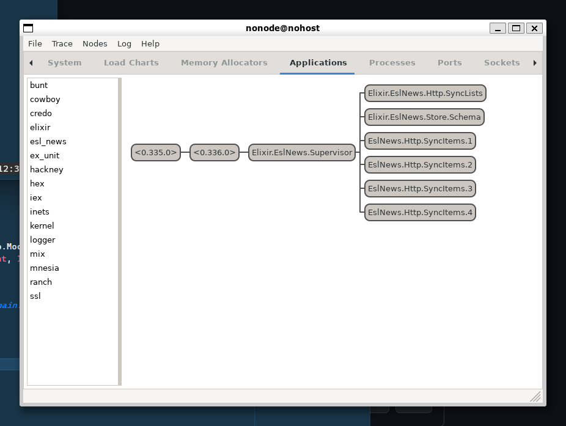

View Source EslNews (ESL News v0.1.0)
EslNews works as an aggeregator for Hacker News stories, fetching data from the HN API for further
analysis or consumption.
- Documentation for
EslNewsis available at https://sdrew.github.io/esl-news/ - Documentation for the HN API is available at https://github.com/HackerNews/API
basic-features
Basic Features
- Fetch the 50 top stories every 5 minutes.
- Makes stories available via two public APIs
- JSON over HTTP
- JSON over WebSockets
EslNewstries to make use of the fewest external dependencies, without being too inconvenient.
public-apis
Public APIs
/api/stories- The endpoint accepts pagination parameters for the most recent list of stories.
page- Default:1per- Default:10
- The endpoint accepts pagination parameters for the most recent list of stories.
/api/stories/[:story_id]- Display JSON for a single story
/api/ws- The WebSockets endpoint delivers the most recent 50 stories.
- The list is re-sent to the client every 20 seconds, including any story updates.
storage
Storage
EslNews requires no external storage, all stories are stored in memory using :mnesia.
web-server
Web server
EslNews provides a webserver directly using :cowboy, and includes a simple Javascript WebSockets client
to display stories on the homepage (/) for testing.
workers
Workers
EslNews.Http.SyncListswill update the list of story IDs using the HN API every 5 minutes. It will then push these story IDs into a processing queue forEslNews.Http.SyncItemsEslNews.Http.SyncItemswill update each story using the HN API.- Existing stories will not be re-fetched.
- Multiple workers will be spawned by the supervisor depending on
MIX_ENV:dev4 workers:prod10 workers
supervision-tree
Supervision Tree
